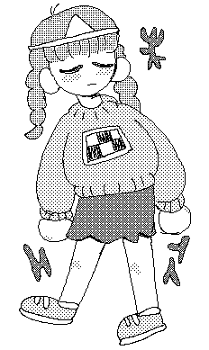

#ABOUT ME
Welcome to Nenrikido, my online bedroom. I have lots of hobbies, mostly in the realm of tinkering (ask me about my home server). I’m also a lifelong, unrepentant weeb. Aside from that, I like reading, spicy noodles, and fish trivia. I work at a university. Feel free to reach out via email about any of these topics.
I made this site to aggregate and host my creative projects, and also to function as its own creative project. Expect the site to be updated haphazardly sporadically and with great passion. You can find the Github repo here.
#INTERESTS
ANIME, MANGA, ETC:
ANIME & MANGA
Mob Psycho 100
The Summer Hikaru Died
Witch Hat Atelier
Sailor Moon
Yu Yu Hakusho
WEBCOMICS
One Punch Man
I Love Amy
WEBNOVELS
Omniscient Reader’s Viewpoint
VIDEO GAMES:
HORROR
Yume Nikki (& fangames)
Silent Hill (my favorite is 2)
The Cat Lady
Angels of Death
RPGS
Tomba! 2
Persona 3
LIFE SIMS
Stardew Valley
Animal Crossing
GACHA
Path to Nowhere
BOOKS:
Check out the library for more!
We Have Always Lived in the Castle - Shirley Jackson
The Vegetarian - Han Kang
Fingersmith - Sarah Waters
The Hour of the Star - Clarice Lispector
Pachinko - Min Jin Lee
And Then There Were None - Agatha Christie
HOBBIES:
Front end web development
Self-hosting
Digital illustration
Resin & polymer clay art
Fishkeeping
Knitting & crochet
Cooking
Fountain pens & stationery
3D printing & digfab
Writing
MUSIC:
ENGLISH
Cibo Matto
Japanese Breakfast
Magdalena Bay
JAPANESE
Soutaiseiriron (相対性理論)
TK from 凛として時雨
Moe and Ghosts
KOREAN
Taemin
Clazziquai Project (클래지콰이)
Dareharu (달의하루)
SHOWS:
Hannibal
Killing Eve
The L Word
Mr. Robot
It’s Always Sunny in Philadelphia
MOVIES:
The Handmaiden
Heathers
#PERSONALITY QUIZZES
| you are seagreen #2E8B57 |
| Your dominant hues are cyan and green. Although you definitely strive to be logical you care about people and know there’s a time and place for thinking emotionally. Your head rules most things but your heart rules others, and getting them to meet in the middle takes a lot of your energy some days. Your saturation level is higher than average - You know what you want, but sometimes know not to tell everyone. You value accomplishments and know you can get the job done, so don’t be afraid to run out and make things happen. Your outlook on life can be bright or dark, depending on the situation. You are flexible and see things objectively. |
| the spacefem.com html color quiz |


Which Hatsune Miku Nendoroid Model Are You?
Hosted By theOtaku.com: Anime

What Type Of Dere Are You?
Hosted By theOtaku.com: Anime
What is says about you: You are a contemplative person. You appreciate quiet moments. People depend on you to make them feel secure.
Find the colors of your rainbow at spacefem.com.

Which Puyo Puyo Character Are You?
Hosted By theOtaku.com: Anime

What Tokyo Mew Mew Character Are You?
Hosted By theOtaku.com: Anime

Which Madoka Magica Girl Are You?
Hosted By theOtaku.com: Anime

Which Rainbow Brite kid are you? By  Growing.
Growing.

What Lucky Star Character Are You?
Hosted By theOtaku.com: Anime
{kind=link}
{kind=link}
{kind=link}
{kind=link}
{kind=link}
{kind=link}
{kind=link}
{kind=link}
{kind=link}
{kind=link}
{kind=link}
{kind=link}
{kind=link}
{kind=link}